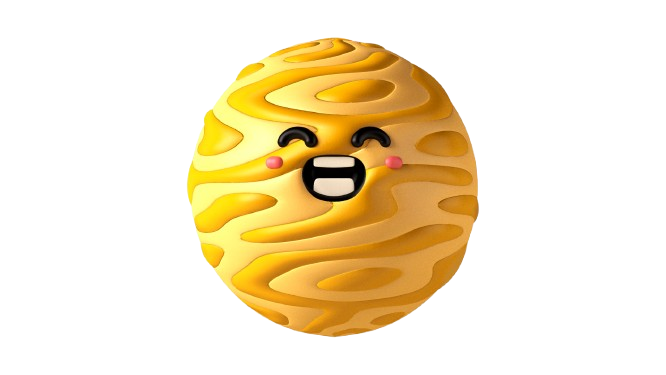
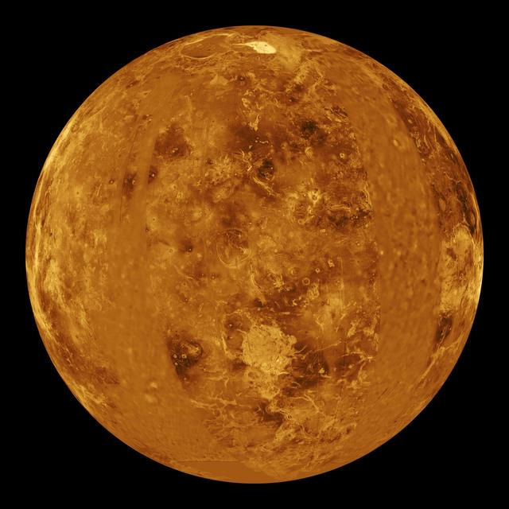
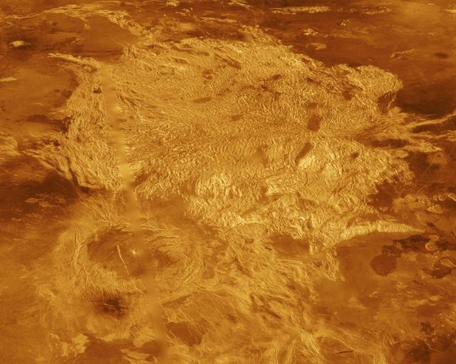

Venus
Venus has thick clouds and is the hottest planet in the solar system. Its atmosphere traps heat, so the surface stays extremely hot.
Type
Rocky planet
Temp
About 467°C
Fun Fact
Rotates backward

Venus has thick clouds and is the hottest planet in the solar system. Its atmosphere traps heat, so the surface stays extremely hot.
Rocky planet
About 467°C
Rotates backward
NASA IMAGE ARCHIVE


Venus can look bright in the evening sky. Its atmosphere is mostly carbon dioxide, and the pressure at the surface is about 93 times Earth's sea-level pressure.
Thick clouds cover Venus. Press the button to learn what lies below them.
Volcanic plains and mountains cover much of Venus. The pressure at the surface is about 92 times Earth's sea-level pressure.